B.15.

This appendix is generated each time it is accessed from the File -> Tool Guide menu item in a Sequitur song window.
The images on this page are in PNG format. If your browser does not display the images correctly, it is probably missing a PNG viewer plugin.
B.1. |
Bloom |
Filters: Eat Duplicates.Draw a curve as the mouse is dragging. When released, create events to fit the shape of the curve that was drawn. Intended for the control change, channel aftertouch, pitch bend and tempo views.
This tool can also be used in the piano roll, hybrid and velocity views, although in these cases it will not create events, but instead fit any existing events to the curve.
Pressing they 'z' and 'x' keys while dragging the mouse will alter the shape of the curve.
B.2. |
Broken Down Line |
Filters: Eat Duplicates and Vaccine.Draw a line as the mouse is dragging. When released, create events that follow the shape of the line. Intended for the control change, velocity and pitch bend views.
B.3. |
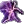 | Chaos |
Filters: Eric, On Key, Pandemic and Pink Noise.Based on the Pink Noise filter, Chaos throws down a random distribution of twenty notes (length of each note determined by the current grid). Current pipeline uses the On-Key filter set to E minor and a Vaccine filter for emphasis.
Usage
Try using this to generate notes on a piano patch, with the grid set to 16th notes. Also gives interesting results with percussive hits.
B.4. |
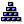 | Echosystem |
Filters: Eat Duplicates, Echo and On Key.I create an echo from every selected note to the current mouse location. As the mouse drags, the echo is continually updated. I include an On Key filter that is initially set to a chromatic scale; select another scale for melodic instruments.
Usage
Use the Select tool to select the desired notes. For best results, select notes that are fairly far apart. Then, with this tool active, click on one of the selected notes and drag.
B.5. |
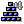 | Echosystem 4 |
Filters: Echo.I create an echo from every selected note to the current mouse location. As the mouse drags, the echo is continually updated. The echo is only four notes deep, so if the mouse is further than four notes, the echo does not actually reach the current mouse position.
Usage
Use the Select tool to select the desired notes. For best results, select notes that are fairly far apart. Then, with this tool active, click on one of the selected notes and drag.
B.6. |
Eraser |
Filters: Wipe Out.I delete any events I touch.
Usage
Click and drag. As the mouse touches events, they are deleted.
B.7. |
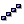 | Follow the Leader |
Filters: Monophobic and On Key.I cause all selected note events to follow the current mouse position. For example, if I am clicked at the middle of a series of C4 notes and dragged up to C5, then the middle of the series will be at C5, with the left and right sides tapering off to C4 at the start and end.
I include an On Key filter so that a key can be enforced.
B.8. |
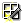 | Grid Wand |
Filters: Quantize.I am used to transform events by making selections and then dragging. The transformation varies depending upon what type of events you are operating on and how you drag.
- If you are operating on notes, dragging up or down increases or decreases the velocity. Dragging left or right decreases or increases the duration, based on the current grid value. The change is applied to all selected notes.
- If you are operating on program changes, dragging left or down decreases the program change value, dragging right or up increases it. The change is applied to all selected program changes.
- If you are operating on control change, channel aftertouch, or pitch bend events, dragging across the events reshapes them. The change happens to any events you touch, regardless of the selection.
Thanks to Gianmario Scotti for the tool idea.
B.9. |
Hot Beat Injection |
Filters: Echo, Short Shift and VelociTease.I create a two measure long rhythm. I work by first creating two measures of notes (note length is the current grid value), randomly assigning a velocity to each note, then running the notes through one or more velocity-sculpting filters. Finally, if a track motion is active for either of the measures, that motion is imprinted at a 40% level on the notes in the measure.
Usage
Click to create a new note and drag. As you drag up or down, the range of possible pitches increases. Dragging left or right effects some of the notes at the start of the measures. This tool is best suited for a drum kit program.
B.10. |
Line |
Filters: Eat Duplicates.Draw a line as the mouse is dragging. When released, create events that follow the shape of the line. Intended for the control change, channel aftertouch, pitch bend and tempo views.
This tool can also be used in the piano roll, hybrid and velocity views, although in these cases it will not create events, but instead fit any existing events to the line.
B.11. |
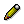 | Pencil |
I am used to either create new events or move existing events. When there is no event where the mouse is pressed, I create a new event. What happens after I create it depends on the view in which the mouse is pressed.
If the mouse is pressed on an existing event, then I will not create any new events, but will instead drag the current selection. If SHIFT is held down while an event is selected, then it is added to the previous selection, and all selected events will move with the mouse. If SHIFT is not held down, then the previous selections are cleared before selecting the event.
- In the piano roll, hybrid, and tempo views, I will move the newly event around as the mouse drags.
- In the channel aftertouch, control change, and pitch bend views, I will continue to create new events as the mouse is dragged.
- In the program change view I will change the program value of the newly created program change as the mouse is dragged.
- In the bank / program change view I will change the bank value of the newly created bank / program change as the mouse is dragged.
B.12. |
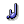 | Pencil Flam |
Filters: Copy, Duration, Short Shift and VelociTease.I act like a Pencil tool, creating events when I am pressed. In addition, I add a flam-like effect by creating a 64th note immediately preceding the event with a slightly lower velocity.
B.13. |
Properties |
B.14. |
Quantize |
Filters: Quantize.I box select events, then align them to the current grid.
B.15. |
|
Select |
I am used to select a rectangular area of events. Click on the upper left bounding point of the events to select, then drag to the lower right. Holding down the SHIFT key will add to the current selection instead of replacing it.
If I am clicked on an existing event, then instead of changing the selection, I drag all selected notes.
B.16. |
 |
Sneaky Pitchmen |
Filters: Eat Duplicates.Draw a curve as the mouse is dragging. When released, create events that follow the shape of the curve. Intended for the control change, channel aftertouch, pitch bend and tempo views.
This tool can also be used in the piano roll, hybrid and velocity views, although in these cases it will not create events, but instead fit any existing events to the curve.
Pressing they 'z' and 'x' keys while dragging the mouse will alter the shape of the curve.
B.17. |
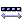 | Tail |
Filters: Echo.I create an echo effect for all selected notes that changes with the mouse. The tail is drawn from the note that was clicked to the current mouse location. All other selected notes have a tail that mimicks the main one.
Usage
Use the Select tool to select one or more notes. Activate this tool, click on a note, and drag.
B.18. |
 |
The Mountain |
Filters: Copy, Rubber Stamp and Short Shift.I take selected notes and create a series of control changes for each one. By default I use control change 7 (volume), although that can be changed in my properties.
The control changes created are based on my current motion in my Rubber Stamp filter and the current mouse location. By default, the motion is a simple shape that creates a triangular, mountain-shaped series of control changes, but changing the motion can create more complex effects.
If more than one track is currently active, I will add control changes to the following tracks (up to four) which mimic the control changes being added to the primary track, but with one difference: They are offset so that the series of control changes starts successively later and ends successively sooner, creating a stair effect.
B.19. |
Track Splitter |
Filters: Keyboard Splitter.I am used to split one track into two tracks, based on note pitch. I do this by taking all notes I receive and sending those below my split point (E3 by default) to the second ordered track. Notes on or above the split point are simply selected.
If there are no active tracks other than the primary track, then I just select all notes on or above my split point.
For information on ordered tracks, see The Active Tracks.
B.20. |
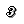 | Tripletize |
Filters: Duration, Eat Duplicates and Quantize.I box select events, turning all selected events into eighth-note triplets. Any overlapping events will be deleted.
B.21. |
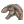 | Velocirapture |
Given a series of selected notes, I alter each note's velocity based on a combination of my current motion and the mouse location.
Usage
Use the Select tool to select a series of events. Activate this tool, then click and drag. As you click up, the velocities of the selected notes are altered to match my motion the further up you drag. If you drag below the click point, my motion is inverted, and the further down you drag the more the velocity is affected. As you drag left and right, the imprint creates a triangle effect, peaking at the mouse location and tapering off to the start and end of the selected events.
B.22. |
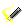 | Wand |
I am used to transform events by making selections and then dragging. The transformation varies depending upon what type of events you are operating on and how you drag.
- If you are operating on notes, dragging up or down increases or decreases the velocity. Dragging left or right decreases or increases the duration. The change is applied to all selected notes.
- If you are operating on program changes, dragging left or down decreases the program change value, dragging right or up increases it. The change is applied to all selected program changes.
- If you are operating on control change, channel aftertouch, or pitch bend events, dragging across the events reshapes them. The change happens to any events you touch, regardless of the selection.